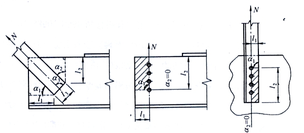

12 节点#
12.1 一般规定#
钢结构节点设计应根据结构的重要性与受力特点、荷载情况和工作环境等因素，选用适当的节点形式、材料与加工工艺。
节点设计应满足承载力极限状态要求，防止节点因强度破坏、局部失稳、变形过大、连接开裂等引起节点失效。
节点构造应符合结构计算假定，传力可靠，减小应力集中。当构件在节点偏心相交时，尚应考虑局部弯矩的影响。
构造复杂的重要节点应通过有限元分析确定其承载力，并宜通过试验进行验证。
节点构造应便于制作、运输、安装、维护，防止积水、积尘，并采取可靠的防腐与防火措施。
12.2 连接板节点#
12.2.1 连接节点处板件在拉、剪作用下的强度#
强度应按下列公式计算：
\[ \frac{N}{{\sum \left( {{\eta _{i}}{A_{i}}} \right)}} \leq f \tag{12.2.1-1} \]\[ A_i = t l_i \tag{12.2.1-2} \]\[ \eta_i = \frac{1}{{\sqrt {1 + 2\cos^2{\alpha_i}} }} \tag{12.2.1-3} \]式中：
\(N\)——作用于板件的拉力；
\(A_i\)——第\(i\)段破坏面的截面积，当为螺栓连接时，应取净截面面积；
\(t\)——板件厚度；
\(l_i\)——第\(i\)破坏段的长度，应取板件中最危险的破坏线长度（图12.2.1）；
\(\eta_i\)——第\(i\)段的拉剪折算系数；
\(\alpha_i\)——第\(i\)段根据破坏线与拉力轴线的夹角。
（a）焊缝连接 （b）螺栓连接 （c）螺栓连接
图12.2.1 板件的拉、剪撕裂
12.2.2 桁架节点板的强度#
桁架节点板（杆件轧制T形和双板焊接T形截面者除外）的强度除可按第12.2.1条相关公式计算外，也可用有效宽度法按下式计算：
\[ \sigma = \frac{N}{{b_e t}} \leq f \tag{12.2.2} \]式中：
\(b_e\)——板件的有效宽度（图12.2.2）；当用螺栓（或铆钉）连接时，应减去孔径，孔径应取比螺栓（或铆钉）标称尺寸大4mm。
（a）焊缝连接 （b）螺栓（铆钉）连接 （c）螺栓（铆钉）连接
图12.2.2 板件的有效宽度
注：\(\theta\)为应力扩散角，焊接及单排螺栓时可取30°，多排螺栓时可取22°。
12.2.3 桁架节点板在斜腹杆压力作用下的稳定性#
对有竖腹杆相连的节点板，当
$\( \frac{c}{t} \leq 15\varepsilon_k \)\( 时（\)c\(为受压腹杆连接肢端面中点沿腹杆轴线方向至弦杆的净距离），可不计算稳定，否则，应按附录G进行稳定计算。在任何情况下， \)\( \frac{c}{t} \leq 22\varepsilon_k \)$。对无竖腹杆相连的节点板，当
$\( \frac{c}{t} \leq 10\varepsilon_k \)\( 时，节点板的稳定承载力可取为 \)\( 0.8 b_e t f \)\(。 当 \)\( \frac{c}{t} > 10\varepsilon_k \)\( 时，应按本规范附录G进行稳定计算，但在任何情况下， \)\( \frac{c}{t} \leq 17.5\varepsilon_k \)$。
12.2.4 当采用本规范第12.2.1条至第12.2.3条方法计算桁架节点板时，尚应满足下列要求：#
节点板边缘与腹杆轴线之间的夹角不应小于15º；

斜腹杆与弦杆的夹角应在30º～60º之间；
节点板的自由边长度\(l_f\)与厚度\(t\)之比不得大于\(60\varepsilon_k\)，否则应沿自由边设加劲肋予以加强。
12.2.5 垂直于杆件轴向设置的连接板（或梁的翼缘）采用焊接方式与工字形、H形或其它截面的未设水平加劲肋的杆件翼缘相连，形成T形接合时，其母材和焊缝都应按有效宽度进行强度计算。#

（a） （b）
图12.2.5 未加劲T形连接节点的有效宽度
工字形或H形截面杆件的有效宽度应按下列公式计算（图12.2.5a）：
\[ b_{\text{ef}} = t_w + 2s + 5k t_f \tag{12.2.5-1} \]\[ k = \frac{t_f}{t_p} \cdot \frac{f_{y,c}}{f_{y,p}} \quad \text{当} \, k > 1 \, \text{时取1} \tag{12.2.5-2} \]式中：
\(b_{\text{ef}}\)——T形结合的有效宽度；
\(f_{y,c}\)——被连接杆件翼缘的钢材屈服强度；
\(f_{y,p}\)——连接板的钢材屈服强度；
\(t_w\)——被连接杆件的腹板厚度；
\(t_f\)——被连接杆件的翼缘厚度；
\(t_p\)——连接板厚度；
\(s\)——对于被连接杆件，轧制工字形或H形截面杆件取为\(r\)（圆角半径）；焊接工字形或H形截面杆件取为焊脚尺寸\(h_f\)。当被连接杆件截面为箱形或槽形，且其翼缘宽度与连接板件宽度相近时，有效宽度应按下式计算（图12.2.5b）：
\[ b_{\text{ef}} = 2t_w + 5k t_f \tag{12.2.5-3} \]有效宽度\(b_{\text{ef}}\)尚应满足下式要求：
\[ b_{\text{ef}} \geq \frac{f_{y,p} b_p}{f_{u,p}} \tag{12.2.5-4} \]式中：
\(f_{u,p}\)——连接板的极限强度；
\(b_p\)——连接板宽度。当节点板不满足式（12.2.5-4）要求时，被连接杆件的翼缘应设置加劲。
连接板与翼缘的焊缝应按能传递连接板的抗力\(b_p t_p f_{y,p}\)（假定为均布应力）进行设计。
12.2.6 杆件与节点板的连接焊缝（图12.2.6）宜采用两面侧焊，也可以三面围焊，对角钢杆件可采用L形围焊，所有围焊的转角处必须连续施焊；弦杆与腹杆、腹杆与腹杆之间的间隙不应小于20mm，相邻角焊缝焊趾间净距不应小于5mm。#

（a）两面侧焊 （b）三面围焊
图12.2.6 杆件与节点板的焊缝连接
12.2.7 节点板厚度一般根据所连接杆件内力的计算确定，但不得小于6mm。节点板的平面尺寸应适当考虑制作和装配的误差。#
12.3 梁柱连接节点#
12.3.1 梁柱连接节点可采用栓焊混合连接、栓接连接、焊接连接、端板连接、顶底角钢连接等构造。#
12.3.2 梁柱采用刚性或半刚性节点时，节点应进行在弯矩和剪力作用下的强度验算。#
12.3.3 当梁柱采用刚性连接时，对应于梁翼缘的柱腹板部位宜设置横向加劲肋，节点域应符合下列规定：#
当横向加劲肋厚度不小于梁的翼缘板厚度时，节点域的受剪正则化长细比 \(\lambda _{\rm{s}}^{{\rm{re}}}\) 不应大于 0.8；对单层和低层轻型建筑，\(\lambda _{\rm{s}}^{{\rm{re}}}\) 不得大于 1.2。节点域的受剪正则化长细比 \(\lambda _{\rm{s}}^{{\rm{re}}}\) 应按下式计算：
当 \(h_c \leq h_b\) 时： $\( \lambda _{\rm{s}}^{{\rm{re}}} = \frac{h_c}{t_w} \tag{12.3.3-1} \)$
当 \(h_c > h_b\) 时： $\( \lambda _{\rm{s}}^{{\rm{re}}} = \frac{h_b}{t_w} \tag{12.3.3-2} \)$
式中：
\(h_c\)、\(h_b\)——分别为节点域腹板的宽度和高度。节点域的承载力应满足下式要求： $\( V \leq V_p \tag{12.3.3-3} \)$
H形截面柱： $\( V_p = h_{b1} h_{c1} t_w \tag{12.3.3-4} \)$
箱形截面柱： $\( V_p = 2 h_{c1} t_w^2 \tag{12.3.3-5} \)$
圆管截面柱： $\( V_p = \pi D t_w^2 \tag{12.3.3-6} \)$
式中：
\(M_1\)、\(M_2\)——分别为节点域两侧梁端弯矩设计值；
\(V_p\)——节点域的体积；
\(h_c1\)——柱翼缘中心线之间的宽度和梁腹板高度；
\(h_b1\)——梁翼缘中心线之间的高度；
\(t_w\)——柱腹板节点域的厚度；
\(D\)——钢管直径线上管壁中心线之间的距离；
\(t_w\)——节点域钢管壁厚；
\(f_v\)——节点域的抗剪强度。节点域的抗剪承载力 \(V_p\) 应据节点域受剪正则化长细比 \(\lambda _{\rm{s}}^{{\rm{re}}}\) 按下列规定取值：
当 \(\lambda _{\rm{s}}^{{\rm{re}}} \leq 0.8\) 时，\(V_p = V\)；
当 \(0.8 < \lambda _{\rm{s}}^{{\rm{re}}} \leq 1.2\) 时，\(V_p = 0.8 V\)；
当 \(\lambda _{\rm{s}}^{{\rm{re}}} > 1.2\) 时，\(V_p = 0.6 V\)；
当轴压比 \(\eta > 0.5\) 时，抗剪承载力 \(V_p\) 应乘以修正系数，当 \(\eta \leq 0.5\) 时，修正系数可取为 \(\sqrt{1 - \left(\frac{N}{Af}\right)^2}\)。
当节点域厚度不满足公式（12.3.3-3）的要求时，对 H 形截面柱节点域可采用下列补强措施：
加厚节点域的柱腹板。腹板加厚的范围应伸出梁的上下翼缘外不小于 150 mm。
节点域处焊贴补强板加强。补强板与柱加劲肋和翼缘可采用角焊缝连接，与柱腹板采用塞焊连成整体，塞焊点之间的距离不应大于较薄焊件厚度的 8 倍。
设置节点域斜向加劲肋加强。
12.3.4 梁柱刚性节点中当工字形梁翼缘采用焊透的 T 形对接焊缝与 H 形柱的翼缘焊接，同时对应的柱腹板未设置水平加劲肋时，柱翼缘和腹板厚度应符合下列规定：#
在梁的受压翼缘处，柱腹板厚度 \(t_w\) 应同时满足： $\( t_w \geq \frac{A_c}{h_c} \tag{12.3.4-1} \)\( \)\( t_w \geq \frac{A_c}{h_b} \tag{12.3.4-2} \)\( \)\( b_e = b_{\rm{fb}} + 5 h_y \tag{12.3.4-3} \)$
式中：
\(A_c\)——梁受压翼缘的截面积；
\(f_t\)、\(f_c\)——分别为梁和柱钢材抗拉、抗压强度设计值；
\(b_e\)——在垂直于柱翼缘的集中压力作用下，柱腹板计算高度边缘处压应力的假定分布长度；
\(h_y\)——自柱顶面至腹板计算高度上边缘的距离，对轧制型钢截面取柱翼缘边缘至内弧起点间的距离，对焊接截面取柱翼缘厚度；
\(t_f\)——梁受压翼缘厚度；
\(h_c\)——腹板的宽度；
\(\phi\)——柱的钢号修正系数。在梁的受拉翼缘处，柱翼缘板的厚度 \(t_c\) 应满足下式要求： $\( t_c \geq \frac{A_t}{h_c} \tag{12.3.4-4} \)$
式中：
\(A_t\)——梁受拉翼缘的截面积。
12.3.5 采用全焊连接或栓焊混合连接（梁翼缘与柱焊接，腹板与柱高强螺栓连接）的梁柱刚接节点，其构造应符合下列要求：#
梁柱节点宜采用柱贯通构造，当柱采用冷成型管截面或壁板厚度 \(t \leq 20\) mm 时，梁柱节点宜采用隔板贯通式构造。
H 型钢柱腹板对应于梁翼缘部位宜设置横向加劲肋；箱形（钢管）柱对应于梁翼缘的位置，宜设置水平隔板。
节点采用隔板贯通式构造时，柱与贯通式隔板应采用全熔透坡口焊缝连接。贯通式隔板挑出长度 \(l\) 宜满足 \(l \geq 5 t\)；同时隔板宜选用厚度方向钢板并采用拘束度较小的焊接构造与工艺，其厚度不应小于梁翼缘厚度和柱壁板的厚度。
梁柱节点区柱腹板加劲肋或隔板应满足下列要求：
横向加劲肋的截面尺寸应经计算确定，其厚度不宜小于梁翼缘厚度；其宽度应符合传力、构造和板件宽厚比限值的要求。
横向加劲肋的上翼缘宜与梁翼缘的上翼缘对齐，并以焊透的 T 形对接焊缝与柱翼缘连接。当梁与 H 形截面柱弱轴方向连接，即与腹板垂直相连形成刚接时，横向加劲肋与柱腹板的连接宜采用焊透对接焊缝。
箱形柱中的横向隔板与柱翼缘的连接，宜采用焊透的 T 形对接焊缝，对无法进行电弧焊的焊缝且柱壁板厚度不小于 16 mm 时，可采用熔化嘴电渣焊。
当采用斜向加劲肋加强节点域时，加劲肋及其连接应能传递柱腹板所能承担剪力之外的剪力；其截面尺寸应符合传力和板件宽厚比限值的要求。
12.3.6 端板连接的梁柱刚接节点，应符合下列要求：#
端板宜采用外伸式端板。端板的厚度不宜小于螺栓直径或 16 mm。
节点中端板厚度与螺栓直径应由计算决定，计算时宜计入撬力的影响。
节点区柱腹板对应于梁翼缘部位应设置横向加劲肋，其与柱翼缘围隔成的节点域应按本规范第 12.3.3 条进行抗剪强度的验算，强度不足时宜设斜加劲肋加强。
12.3.7 采用端板连接的节点，应符合下列要求：#
连接应采用高强度螺栓，螺栓间距应满足本规范表 11.4.2 的规定。
螺栓应成对称布置，并应满足拧紧螺栓的施工要求。
12.4 铸钢节点#
12.4.1 铸钢节点应满足结构受力、铸造工艺、连接构造与施工安装的要求，适用于几何形式复杂、杆件汇交密集、受力集中的部位。铸钢节点与相邻构件可采取焊接、螺纹或销轴等连接方式。#
12.4.2 铸钢节点应满足承载力极限状态的要求，节点应力应符合下式要求：#
式中：
\(\sigma_{\text{zs}}\)——折算应力；
\(\sigma_1, \sigma_2, \sigma_3\)——计算点处在相邻构件荷载设计值作用下的第一、第二、第三主应力；
\(\phi\)——折算应力的强度设计值增大系数。当各主应力均为压应力时，\(\phi = 1.0\)；当各主应力均为拉应力时，\(\phi = 0.8\)，且最大主应力应满足 \(\sigma_1 \leq f\)；其他情况时，\(\phi = 0.9\)。
12.4.3 铸钢节点可采用有限元法确定其受力状态，并可根据实际情况对其承载力进行试验验证。#
12.4.4 焊接结构用铸钢节点的碳当量及硫、磷含量应符合国家相关标准的规定。#
12.4.5 铸钢节点应根据铸件轮廓尺寸、夹角大小与铸造工艺确定最小壁厚、内圆角半径与外圆角半径。铸钢件壁厚不宜大于150mm，应避免壁厚急剧变化，壁厚变化斜率不宜大于1/5。内部肋板厚度不宜大于外侧壁厚。#
12.4.6 铸造工艺应保证铸钢节点内部组织致密、均匀，铸钢件宜进行正火或调质热处理，设计文件应注明铸钢件毛皮尺寸的允许偏差。#
12.5 预应力索节点#
12.5.1 预应力高强拉索的张拉节点应保证节点张拉区有足够的施工空间，便于施工操作，且锚固可靠。预应力索张拉节点与主体结构的连接应考虑超张拉和使用荷载阶段拉索的实际受力大小，确保连接安全。#
12.5.2 预应力索锚固节点应采用传力可靠、预应力损失低且施工便利的锚具，尤其应保证锚固区的局部承压强度和刚度，应设置必要的加劲肋、加劲环或加劲构件等加强措施。应对锚固节点区域的主要受力杆件、板域进行应力分析和连接计算，并采取可靠、有效的构造措施。节点区应避免出现焊缝重叠、开孔等易导致严重残余应力和应力集中的情况。#
12.5.3 预应力索转折节点宜与主体结构连接，应设置滑槽或孔道供拉索准确定位和改变角度。滑槽或孔道内可采用润滑剂或衬垫等摩擦系数低的材料；转折节点沿拉索夹角平分线方向对主体结构施加集中力，应验算该处的局部承压强度和该集中力对主体结构的影响，并采取加强措施。拉索转折节点处于多向应力状态，在设计中应考虑其强度降低。#
12.6 支座#
12.6.1 梁或桁架支于砌体或混凝土上的平板支座，其底板应有足够面积将支座压力传给砌体或混凝土，厚度应根据支座反力对底板产生的弯矩进行计算。底板厚度不宜小于12mm。#
梁的端部支承加劲肋的下端，按端面承压强度设计值进行计算时，应刨平顶紧，其中突缘加劲板的伸出长度不得大于其厚度的2倍，并宜采取限位措施。

(a) 平板支座

(b) 突缘支座
图12.6.1 梁的支座
12.6.2 弧形支座节点中的圆柱形弧面支座板与平板为线接触，其支座反力 \(R\) 应满足下式要求：#
式中：
\(d\)——弧形表面接触点曲率半径\(r\)的2倍；
\(l\)——弧形表面或滚轴与平板的接触长度。

(a) 弧形支座示意图

(b) 铰轴式支座示意图
图12.6.2 弧形支座示意图
12.6.3 铰轴支座节点中，当两相同半径的圆柱形弧面自由接触面的中心角 \(\theta \geq 90^\circ\) 时，其圆柱形枢轴的承压应力应按下式计算：#
式中：
\(d\)——枢轴直径；
\(l\)——枢轴纵向接触面长度。
12.6.4 橡胶支座适用于支座反力较大、同时允许有一定水平位移与较小转角的结构。板式橡胶支座设计应符合下列规定：#

(a) 橡胶支座

(b) 橡胶垫板
图12.6.4 板式橡胶支座
板式橡胶支座的底面面积，可根据承压条件确定；
橡胶层总厚度应根据橡胶剪切变形条件确定；
在水平力作用下，板式橡胶支座应满足稳定性和抗滑移要求；
支座锚栓按构造设置时数量宜为2～4个，直径不小于20mm。对于受拉锚栓，其直径应按计算确定，并应设置双螺母防止松动；
板式橡胶支座应采取防老化措施，并应考虑长期使用后因橡胶老化进行更换的可能性；
板式橡胶支座宜采取限位措施。
12.6.5 对于受力复杂或大跨度结构，为适应支座处转角、位移、上拔力及水平力的需要，宜采用球形支座。球形支座应根据使用条件采用固定、单向滑动或双向滑动等形式。球形支座上盖板、球芯、底座和箱体均应采用铸钢加工制作，滑动面应采用相应的润滑措施，支座整体应采用防尘及防锈措施。#
12.7 柱脚#
12.7.1 多高层结构框架柱的柱脚宜采用埋入式柱脚，可采用插入式柱脚及外包式柱脚；多层结构框架柱的柱脚尚可采用外露式柱脚；单层厂房柱刚接柱脚宜采用插入式柱脚，也可采用外露式柱脚，铰接柱脚宜采用外露式柱脚。#
12.7.2 外包式、埋入式及插入式柱脚，钢柱与混凝土接触的范围内不得涂刷油漆；柱脚安装时，应将钢柱表面的泥土、油污、铁锈和焊渣等用砂轮清刷干净。#
12.7.3 轴心受压柱或压弯柱的端部为铣平端时，柱身的最大压力应直接由铣平端传递，其连接焊缝或螺栓应按最大压力的15%或最大剪力中的较大值进行抗剪计算；当压弯柱出现受拉区时，该区的连接尚应按最大拉力计算。#
12.7.4 外露式柱脚#
柱脚锚栓不宜用以承受柱脚底部的水平反力，此水平反力由底板与混凝土基础间的摩擦力（摩擦系数可取0.4）或设置抗剪键承受。
柱脚底板尺寸和厚度应根据柱端弯矩、轴心力、底板的支承条件和底板下混凝土的反力以及柱脚构造确定。外露式柱脚的锚栓有效截面积，应考虑使用环境由计算确定。
柱脚锚栓埋置在基础中的深度，应使锚栓的拉力通过其与混凝土之间的粘结力传递。埋置深度受到限制时，则锚栓应牢固地固定在锚板或锚梁上。当锚栓在混凝土基础中的锚固较长时，宜在锚栓端部设置锚板。
12.7.5 外包式柱脚#

图12.7.7 外包式柱脚
1－钢柱；2－水平加劲肋；3－柱底板；4－栓钉；5－锚栓；6－外包混凝土；7－基础梁；8－顶层钢筋混凝土梁
外包式柱脚底板应位于基础梁或阀板的混凝土保护层内；外包混凝土厚度，对H形截面柱不宜小于160mm，对矩形管或圆管柱不宜小于180mm，同时不宜小于钢柱截面高度的0.3倍；混凝土强度等级不宜低于C30；柱脚混凝土外包高度，H形截面柱不宜小于柱截面高度的2倍，矩形管柱或圆管柱宜为柱截面高度或圆管直径的2.5倍；当没有地下室时，外包宽度和高度宜增大20%；当仅有一层地下室时，外包宽度宜增大10%。
柱脚底板尺寸和厚度应按结构安装阶段荷载作用下轴心力、底板的支承条件计算确定，其厚度不宜小于20mm。
柱脚锚栓应按构造要求设置，直径不宜小于20mm，锚固长度不宜小于其直径的20倍。
柱在外包混凝土的顶部箍筋处应设置水平加劲肋或横隔板，其宽厚比应符合本规范6.4节的相关规定。
当框架柱为圆管或矩形管时，应在管内浇灌混凝土，强度等级应不小于基础混凝土。浇灌高度应高于外包混凝土，且不小于圆管直径或矩形管的长边。
外包钢筋混凝土的抗弯和抗剪承载力验算及受拉钢筋和箍筋的构造要求应符合国家现行标准《混凝土结构设计规范》GB50010的有关规定，主筋伸入基础内的长度不应小于25倍直径，四角主筋两端应加弯钩，下弯长度不应小于150mm，下弯段宜与钢柱焊接，顶部箍筋应加强加密。
12.7.6 埋入式柱脚#

图12.7.9 柱翼缘或管柱外边缘混凝土保护层厚度
柱埋入部分四周设置的主筋、箍筋应根据柱脚底部弯矩和剪力按国家现行标准《混凝土结构设计规范》GB50010计算确定，并应符合相关的构造要求。柱翼缘或管柱外边缘混凝土保护层厚度，边列柱的翼缘或管柱外边缘至基础梁端部的距离应不小于400mm，中间柱翼缘或管柱外边缘至基础梁梁边相交线的距离应不小于250mm；基础梁梁边相交线的夹角应做成钝角，其坡度应不大于1:4的斜角；在基础护阀板的边部，应配置水平U形箍筋抵抗柱的水平冲切。
柱脚端部及底板、锚栓、水平加劲肋或横隔板的构造要求应符合本规范第12.7.7条的有关规定。
圆形和矩形管柱应在管内浇灌混凝土，强度等级应大于基础混凝土，在基础面以上的浇灌高度应大于圆管直径或矩形管长边的1.5倍。
对于有拔力的柱，宜在柱埋入混凝土部分设置栓钉，栓钉数量和布置宜符合本规范第12.7.8条的规定。
12.7.7 插入式柱脚#
插入式柱脚插入混凝土基础杯口的深度应符合表12.7.11的规定，实腹截面柱柱脚应根据本规范第12.7.10条的规定计算，双肢格构柱柱脚应根据下列公式计算：
式中：
\(N\)——柱肢轴向拉力设计值；
\(f_t\)——杯口内二次浇灌层细石混凝土抗拉强度设计值；
\(S\)——柱肢外轮廓线的周长；对圆管柱可按式（12.7.11-2）计算。
表12.7.11 钢柱插入杯口的最小深度
柱截面形式 |
实腹柱 |
双肢格构柱（单杯口或双杯口） |
|---|---|---|
最小插入深度 \(d_{\text{min}}\) |
\(1.5h\) 或 \(1.5d_c\) |
\(0.5h\) 和 \(1.5d_c\)（或 \(d_c\)）的较大值 |
注：
\(h\) 为实腹工字形柱或矩形管柱的截面高度（长边尺寸）；\(d_c\) 为柱截面宽度；\(d\) 为圆管柱的外径；
格构柱的 \(h\) 为两肢垂直于虚轴方向最外边的距离，\(d_c\) 为沿虚轴方向的柱肢宽度；
双肢格构柱柱脚插入混凝土基础杯口的最小深度不宜小于500mm，亦不宜小于吊装时柱长度的1/20。
插入式柱脚设计应符合下列规定：
H形钢实腹柱宜设柱底板；钢管柱应设柱底板。柱底至基础杯口底的距离不应小于50mm，当有柱底板时，可采用150mm，柱底板应设排气孔或浇注孔。应设置临时调整措施；
实腹柱、双肢格构柱杯口基础底板应验算柱吊装时局部受压和冲切承载力；
杯口基础的杯壁应根据柱底部内力设计值作用于基础顶面配置钢筋，杯壁厚度应不小于《建筑地基基础设计规范》GB50007的有关规定。